Press coverage
In 2019, Michel Phelippeau appeared on the cover of Pratique des Arts (issue no. 149), alongside a 6-page feature on his work.
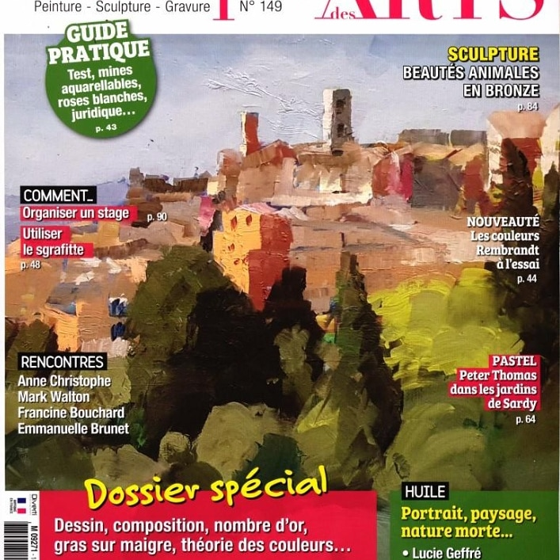
In this interview, Michel Phelippeau looks back on his journey: his training as a chemist-perfumer, his move to Grasse in 1990, and the connection he draws between composing a scent and composing a painting. He details his working method — his "angle method," his handling of warm and cool colours, his palette technique — as well as the workshops he runs each summer in Provence and, more recently, in Myanmar. The article also illustrates, in seven steps, the complete creation of a painting depicting the town of Grasse.
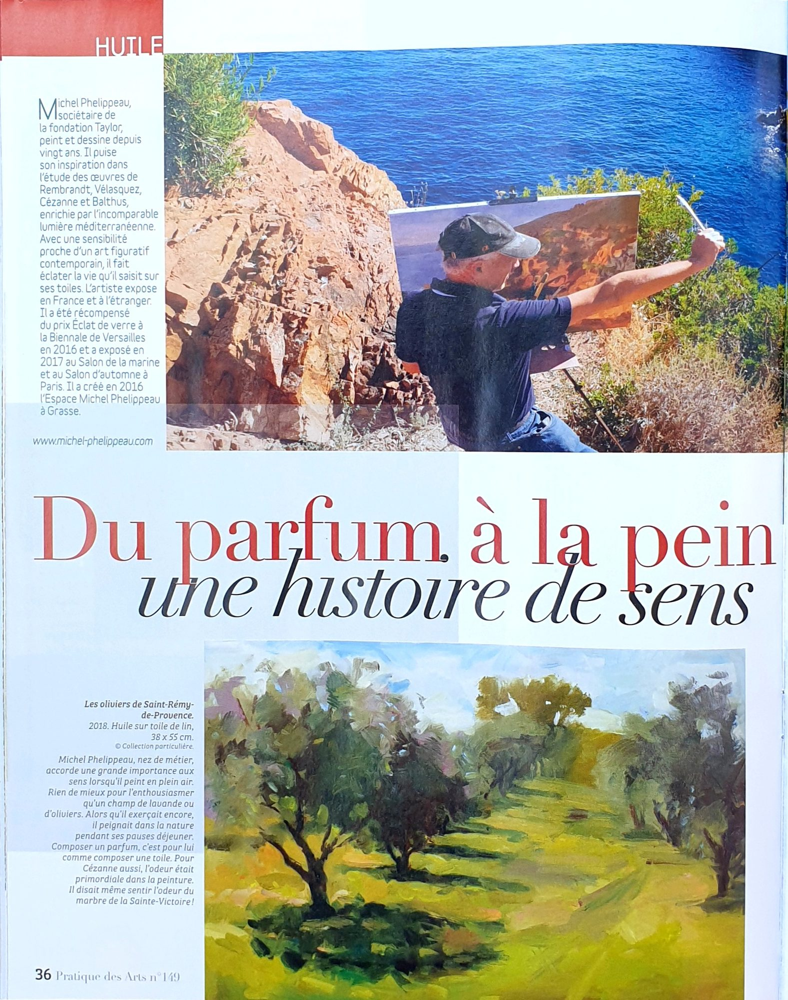
This page introduces Michel Phelippeau: a member of the Fondation Taylor, he has been painting for twenty years, drawing on his study of Rembrandt, Velázquez, Cézanne and Balthus. He received the Éclat de Verre Prize at the Biennale de Versailles and exhibited at the Salon de la Marine and the Salon d'Automne in Paris. He created the Espace Michel Phelippeau in Grasse in 2016.
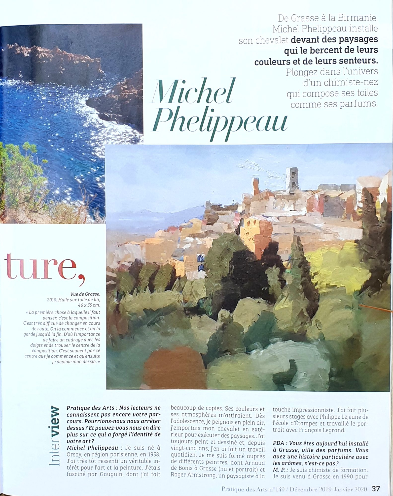
The interview opens with Michel Phelippeau's story: born in Orsay in 1958, passionate about painting since adolescence, he moved to Grasse in 1990 for his work as a chemist-perfumer (a "nose"), before training with several painters, including Philippe Lejeune of the École d'Étampes.
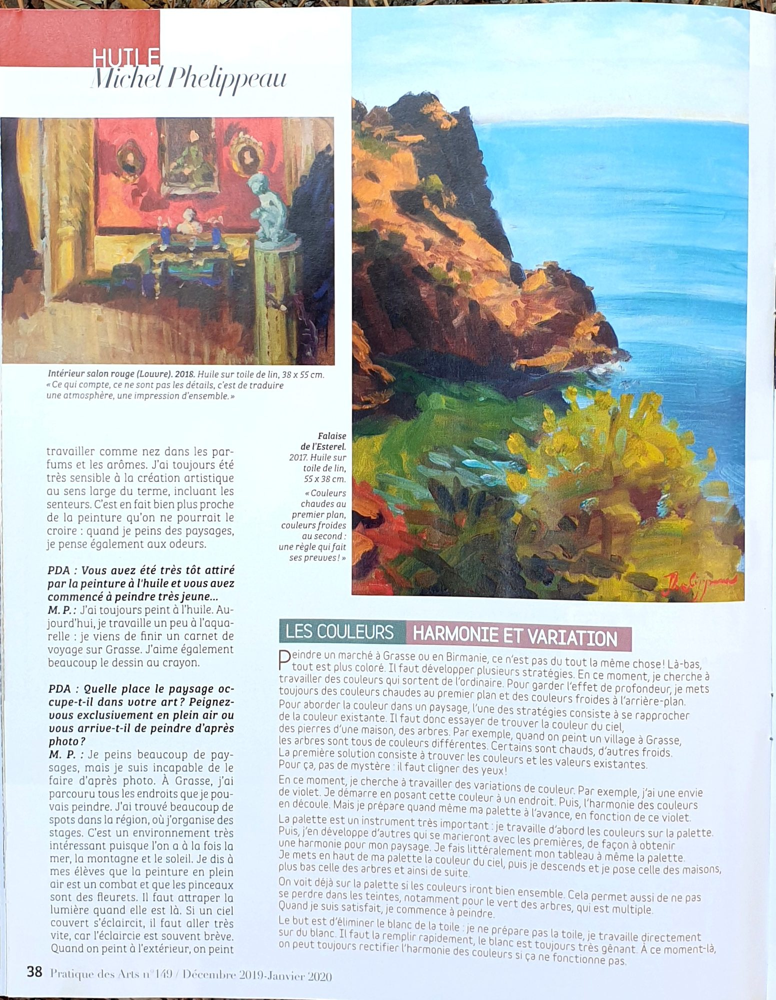
Michel Phelippeau explains why he only paints from life, never from photographs: light and colour change too quickly to be captured by a snapshot. A sidebar on colour harmony details his working method on the palette, starting from the sky's hues to progressively build the whole painting.
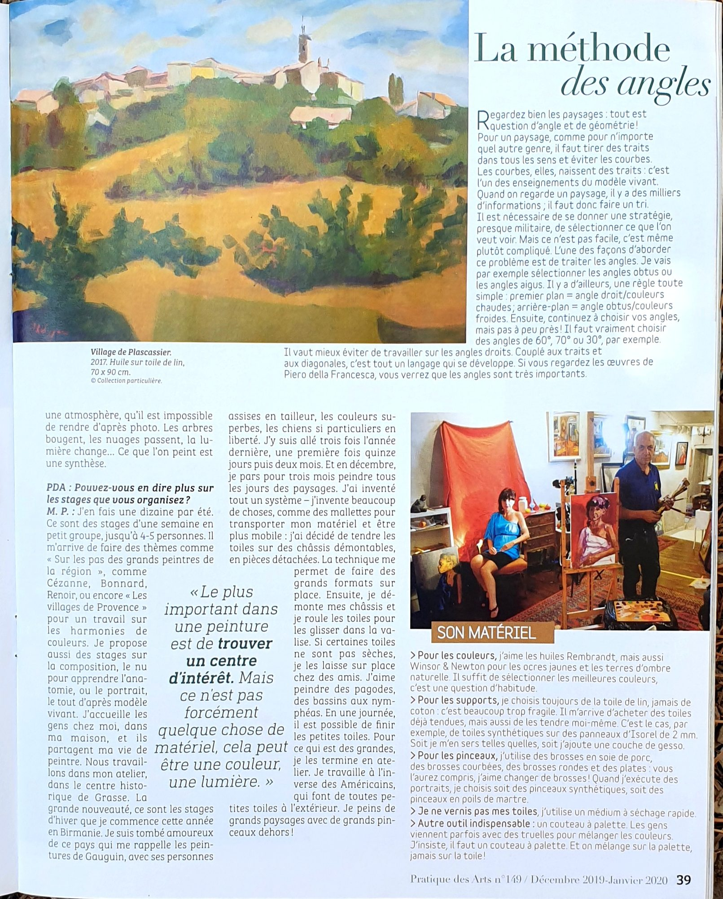
This page presents his "angle method": favouring straight lines and precise angles (60°, 70°, 30°) over curves or right angles. Michel Phelippeau also describes his week-long workshops in small groups in Grasse, on varied themes, as well as his preferred materials: linen canvas, palette knife, and a variety of brushes.
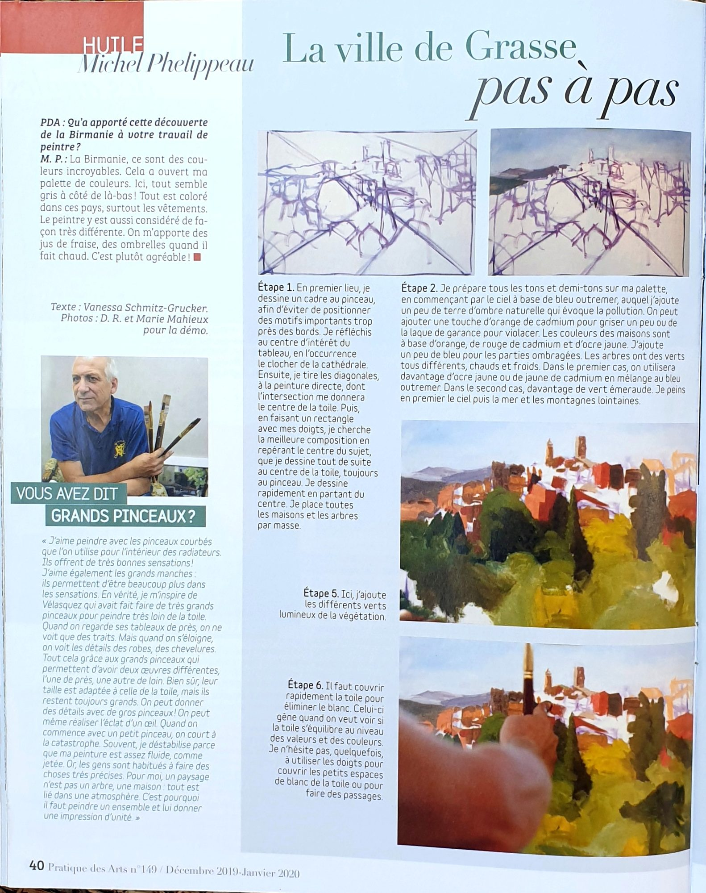
This page opens the step-by-step feature "The Town of Grasse": Michel Phelippeau details the first two steps of creating a painting, from the brush sketch to laying in the sky and sea tones on the palette. A sidebar also revisits his fondness for large brushes, inherited from Velázquez.
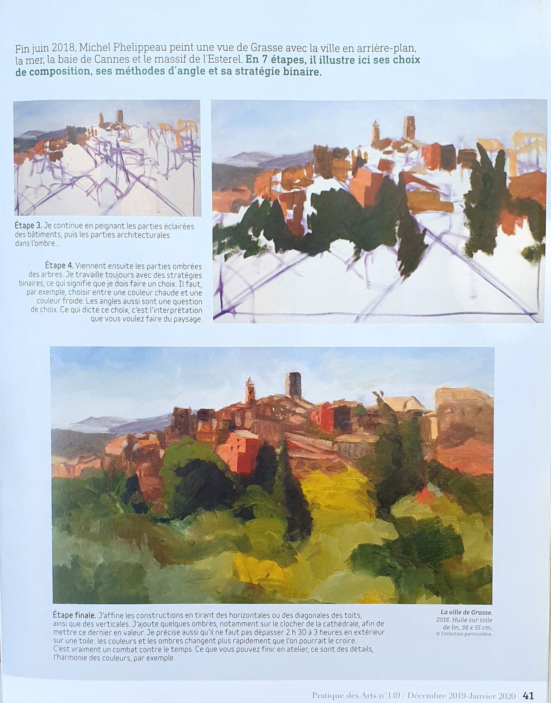
The continuation and conclusion of the step-by-step feature: steps 3 and 4 (lit and shaded areas), through to the final step where Michel Phelippeau refines the construction and shadows. He notes that he never works more than two and a half to three hours outdoors on the same canvas, as the light changes too quickly.
Published in 2020 by Diverti Éditions, this 160-page book traces a journey through Myanmar in paintings.
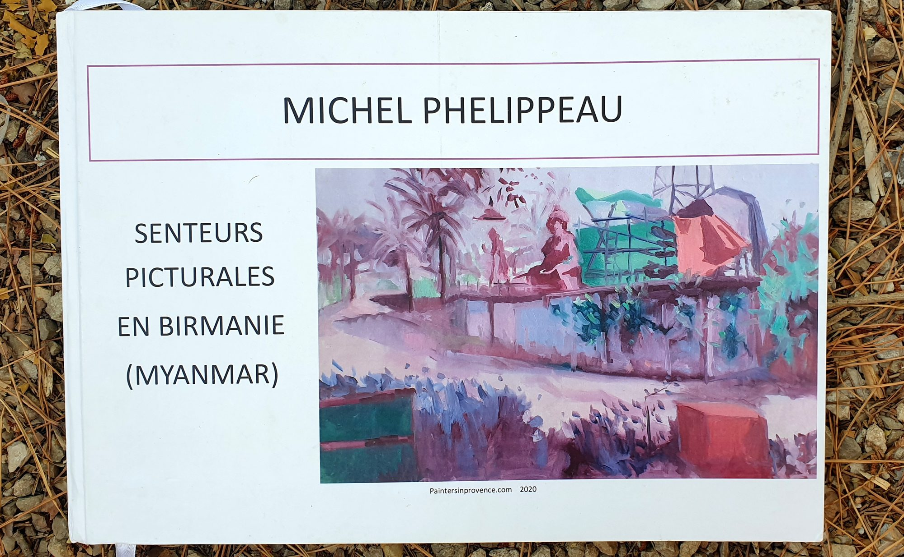
In this book, Michel Phelippeau presents the paintings he made in Myanmar (Burma) between 2018 and 2020. From his arrival in Yangon, he was won over by the country's atmosphere: its scents, colours, clothing, buildings, birdsong, loudspeaker chants, diversity and the kindness of its people. He sought to capture all these sensations in canvases painted outdoors, directly from life.
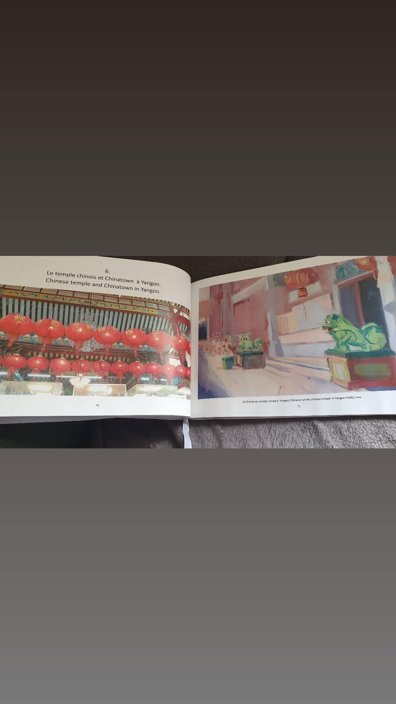
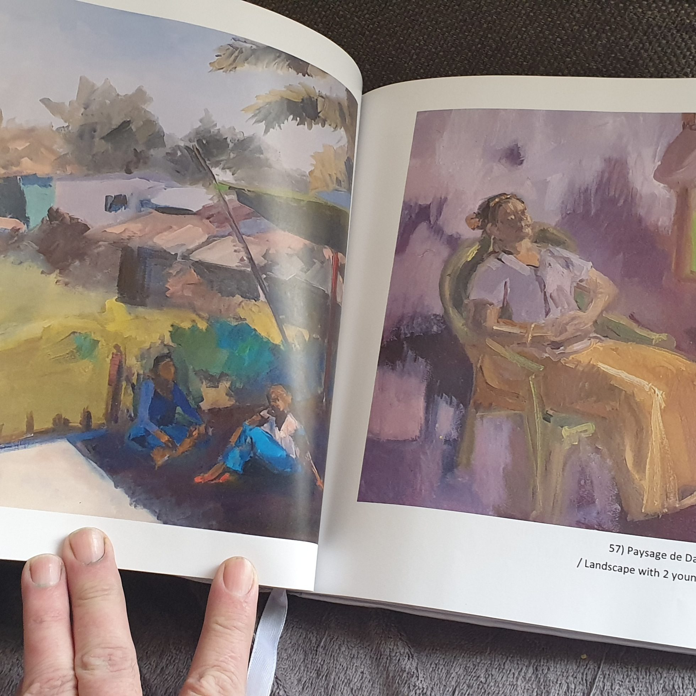
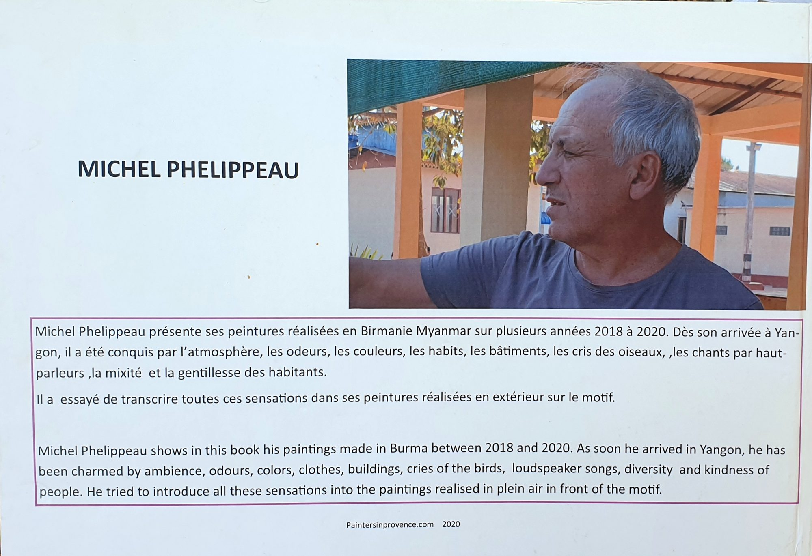